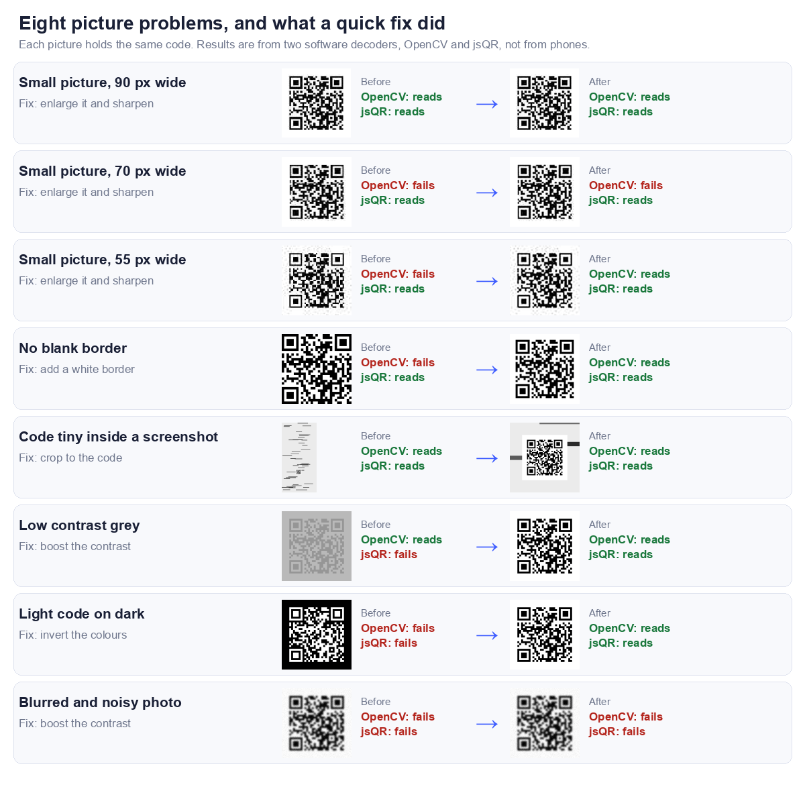

A QR code arrives as a screenshot, a forwarded photo, or a file in your downloads. The usual advice is to point your camera at it, and that fails when the code is on the same device as the camera. So you need a way to read the picture itself.
There are four ways that work. The first three are about getting the picture read. The fourth is for the case where the picture is the problem, and for that one we ran a test.
The short answer
Pick by your situation
| Way | Works best when | What you need |
|---|---|---|
| 1. Browser scanner | You want to read the contents before anything opens | Any browser |
| 2. Phone photo tools | The picture is already saved on your phone | A recent phone |
| 3. Another camera | The picture is on a computer screen | A second device with a camera |
| 4. Fix the picture | The first three say nothing was found | An image editor, or just a crop |
If you only read one thing
Read the address before you open it. A code from a message or an email deserves more suspicion than one on a menu, and a scanner that shows you the text first is the safest way to find out where it goes.
Way 1: Drop it into a browser scanner
How to do it
Open our QR code scanner. You can choose an image file, drag one onto the box, or paste a copied image with Ctrl+V or Cmd+V. It reads the code and shows you what is inside.
Why this is the safest way
The scanner shows the text of the code and only then offers a button to open a link, so you see the full address first. It also decodes the image in your browser, and our scanner page states that nothing is uploaded. That matters if the code holds something private, such as a WiFi password.
We tested it on two codes, one holding an ordinary address and one holding a short redirect style address. For each, it displayed the exact address inside the code.
If it says nothing was found
That almost always means the picture is the problem, not the code. Skip to Way 4.
Way 2: Use your phone's own photo tools
What to look for
Many recent phones can recognise a QR code inside a saved picture, either when you open it in the photo viewer or through a search by image feature. Where the option sits, and what it is called, depends on the phone and its software version.
What we could not check
We did not test specific phones for this article, so we will not name buttons we have not pressed. Our guide to scanning a QR code from a screenshot covers the iPhone and Android routes in more detail. If your phone does not offer anything, Way 1 works on any phone with a browser.
Way 3: Point another camera at the screen
When to use it
If the picture is on a computer screen, a second device solves the problem the first one cannot: it can point its camera at the screen.
Steps
- Open the picture and make it as large as the screen allows.
- Turn the screen brightness up.
- Point the second device's camera at the code and hold it steady.
Tips
Avoid glare from windows or lamps, which wash out the code. Do not zoom the picture past the point where its edges go soft, because a blurred code is harder to read, as we measured in why won't this QR code scan.
Way 4: Fix the picture, then try again
What we tested
We took one QR code and spoiled it eight ways: three sizes of small picture, no blank margin, a tiny code inside a screenshot, low contrast, inverted colours, and a blurred noisy photo. Then we applied a quick fix and tried again. Every picture held the same code, and we read each one with two software decoders, OpenCV and jsQR. These are software tests, not phones, and they do not always agree with each other.

| Problem | Fix | Before (OpenCV / jsQR) | After (OpenCV / jsQR) |
|---|---|---|---|
| Small picture, 90 px wide | Enlarge it and sharpen | Reads / Reads | Reads / Reads |
| Small picture, 70 px wide | Enlarge it and sharpen | Fails / Reads | Fails / Reads |
| Small picture, 55 px wide | Enlarge it and sharpen | Fails / Reads | Reads / Reads |
| No blank border | Add a white border | Fails / Reads | Reads / Reads |
| Code tiny inside a screenshot | Crop to the code | Reads / Reads | Reads / Reads |
| Low contrast grey | Boost the contrast | Reads / Fails | Reads / Reads |
| Light code on dark | Invert the colours | Fails / Fails | Reads / Reads |
| Blurred and noisy photo | Boost the contrast | Fails / Fails | Fails / Fails |
What helped
- Inverting a light on dark code. Both decoders failed it, and both read it once the colours were flipped. It was the clearest result of the test.
- Adding a white border. The code with no blank margin failed in OpenCV and read after we added one. A QR code needs a quiet margin around it, and cropped screenshots often lose it.
- Boosting contrast on a grey code. jsQR failed it and read it after the stretch.
- Enlarging a very small picture. At 55 pixels wide OpenCV failed and then read after we enlarged and sharpened it.
What did not help
- The blurred, noisy photo. Both decoders failed it and both still failed after a contrast boost. Once the squares have smeared together, editing cannot bring them back. Ask for the original instead of a copy.
- Enlarging the 70 pixel picture. OpenCV failed it before and after. Enlarging helps only when there is still enough detail to enlarge.
- Cropping the code out of a large screenshot. Both decoders read it either way, because this code was a reasonable size inside the screenshot. Cropping matters when the code is tiny, and it never hurts.
The two decoders disagreed, so try a second scanner
jsQR read all three small pictures, including the 55 pixel one, and OpenCV did not read two of them. In our earlier size test a similar code stopped reading at 55 pixels, so the line depends on the decoder and the exact image. If one scanner says nothing was found, try another before you give up.
Which way to pick
A simple order to try them in
| Situation | Try |
|---|---|
| The code came in a message and you want to check it first | Way 1 |
| The picture is in your phone's photos | Way 2, then Way 1 |
| The picture is on a computer screen | Way 3, or Way 1 on the computer |
| Nothing was found | Way 4, then a second scanner |
Why pictures fail to scan in the first place
The usual causes are size, blur, a missing margin and low contrast, and we measured each of them in why won't this QR code scan. Messaging apps also shrink pictures, so ask for the original file if you can.
Frequently asked questions
Can I scan a QR code from an image without another phone?
Yes. A browser scanner such as ours reads a picture saved on the same device, so you do not need a second one.
Is it safe to scan a QR code from an image?
Scanning is safe if you read the address before you open it. The risk is in tapping a link without looking. Our guide on whether QR codes are safe explains what to check.
Why does my scanner say no QR code was found?
Usually the picture is too small, too blurry, has lost its blank margin, is low contrast, or is light on dark. Each of those is in the test above.
Do I need to install an app?
Not for our scanner. It runs in a web browser, and you do not need an account.
Is my image uploaded when I scan it?
Our scanner page states that images are decoded in your browser and nothing is uploaded. You can check this yourself: load the page, switch off your internet connection, and scan a saved image. It still works.
Can I scan a QR code from a screenshot?
Yes, a screenshot is just a picture. If the code is small inside a large screenshot, crop to it first. Our screenshot guide goes through it.